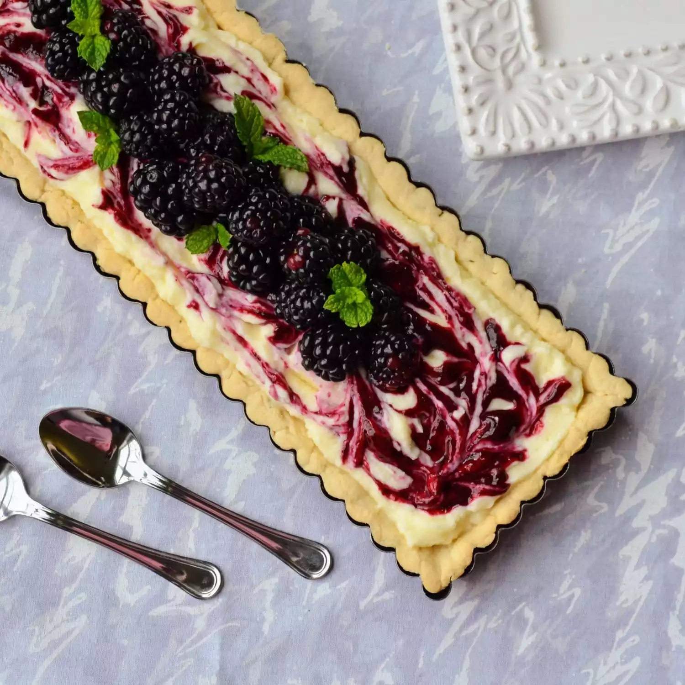

Ciao! Bienvenido a cake world

First of all, you need a high quality egg, flower and things to make cake
Second, bake the cake
Put the blueberry cream on top
Ingredients you need
- premade cake
- blueberry
- cream
Steps
- Preheat the oven to 175 degree
- Put the cake in the over
- cook for 15mins